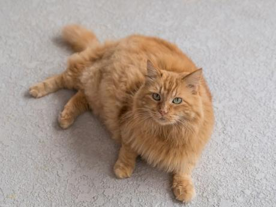

GATITOS EN ADOPCION
Descripción
Botas es un gatito muy jugueton y regalon, sabe hacer sus necesidades en arenero
y no se porta para nada mal, es de un pelaje corto y atigrado, se deja acariciar
y siempre busca que le den mucho cariño, se busca familia que le de mucho amor.

-Nombre: Botas
-Edad: 7 Meses
-Peso: 247 Gramos
-Raza: Mestizo
Descripción
Michu es un gatito con muy mal humor, es bonito y abrazable pero es dificil
poder ganarse su cariño, necesita de mucha paciencia y buena almentacion que es
lo que mas le gusta, tiene su pelito corto y atigrado.

-Nombre: Michu
-Edad: 11 Meses
-Peso: 658 Gramos
-Raza: Atigrado
Descripción
Doris es una gatita muy llorona, siempre esta maullando por comida y cariño,
una vez recibe lo que busca se calma y se pone muy amorosa y juguetona
no es nada agrasiva pero es muy asustadiza, es de pelito largo y atigrado.
-Nombre: Doris
-Edad: 10 Meses
-Peso: 589 Gramos
-Raza: Atigrado